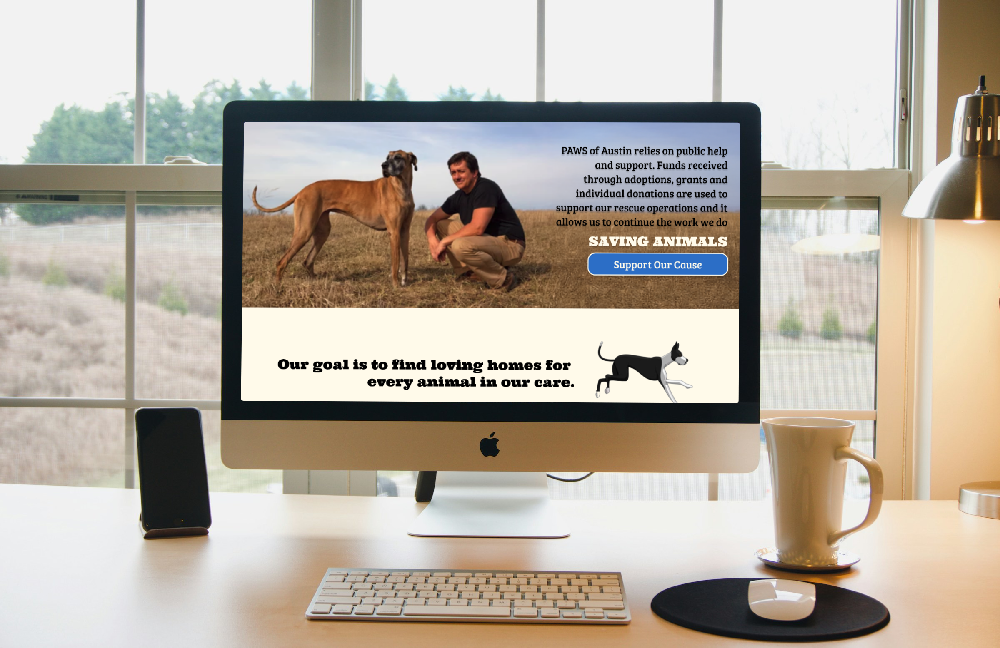

Role: UX/UI Designer
Responsibilities: UX research, user flows, wireframing, prototyping, and UI design (end-to-end)
Redesigning a nonprofit dog rescue website for clarity, trust, and accessibility.
PAWS of Austin is a nonprofit organization focused on rescuing and rehoming large-breed dogs. Their existing website was outdated and disorganized, making it difficult for users to adopt, volunteer, or donate. My redesign focused on improving clarity, emotional connection, and overall usability.
I redesigned the site structure and interface to create a clear, emotionally engaging experience. The new design prioritizes adoptable dogs, streamlines navigation, and introduces clear, accessible calls-to-action for key user goals.